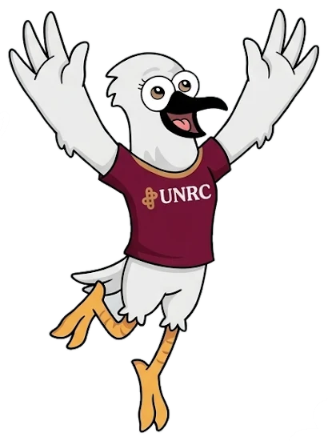
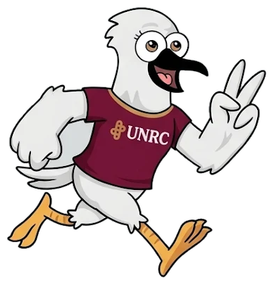
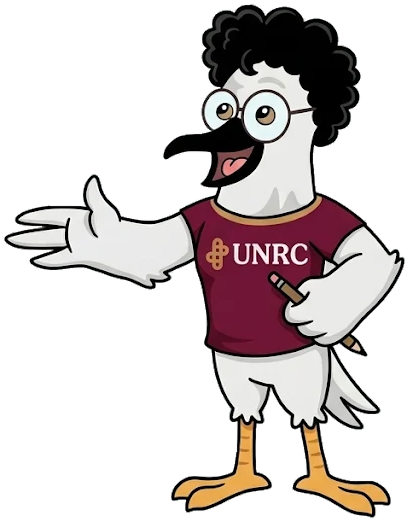

Todos somos un ciborg
Este artículo explora cómo las tecnologías modernas convierten a las personas en ciborgs del día a día.
Filosofía en la Red · 2024
Leer artículo
Publicaciones de Pablo Adrian Rivera Juvenal

En este espacio se comparte la producción académica y de divulgación del autor: filosofía, psicología, educación y tecnología, publicada en Filosofía en la Red, en Sin Contraseñas (revista digital de la UNIVIM) y en otros espacios académicos.
Este artículo explora cómo las tecnologías modernas convierten a las personas en ciborgs del día a día.
Este artículo reflexiona sobre el proceso y la experiencia de la lectura desde una perspectiva filosófica.
Este artículo cuestiona si una inteligencia artificial puede tener conciencia, desde una mirada filosófica y tecnológica, a través del espejo de Alicia.

Una exploración de los lazos intelectuales, esotéricos y científicos que entretejen el pensamiento de Giordano Bruno, y su aplicación en el marketing, la política y la magia ritual.

Desde la magia del caos: cómo revisar las propias creencias —los «túneles de realidad»— puede mejorar el año que comienza.

Este artículo analiza el modelo Gunawardena y su impacto en la participación efectiva en foros educativos.

Este artículo aborda el impacto del derecho en el ámbito deportivo, destacando su relevancia en la justicia y equidad dentro de las actividades deportivas. Coautoría con Marco Jair Rojo de la Peña.

Este artículo analiza cómo la psicología deportiva impacta tanto en el rendimiento en la cancha como en el bienestar psicológico de los atletas.

El hábito aristotélico releído desde las redes neuronales y la inteligencia artificial generativa: qué significa formar el carácter cuando las máquinas también «aprenden» por repetición.

Desarrollo de un instrumento para evaluar las competencias emocionales de los deportistas, desde el modelo de educación emocional de Bisquerra.

Este artículo explora los fundamentos y aplicaciones de la consultoría filosófica.

En este texto se explora la educación derivada de la educación emergente por la pandemia: retos de un nuevo ecosistema escolar.

Una inteligencia artificial educativa que funciona en la computadora de la escuela, sin internet y sin costo, construida con el modelo CONSTRUYE. Coautoría con Andrea Hernández Rojas.

Frente al consumo digital que atrofia la atención —el brainrot—, una propuesta desde el modelo Edupunk 2.0 para recuperar el aprendizaje profundo.